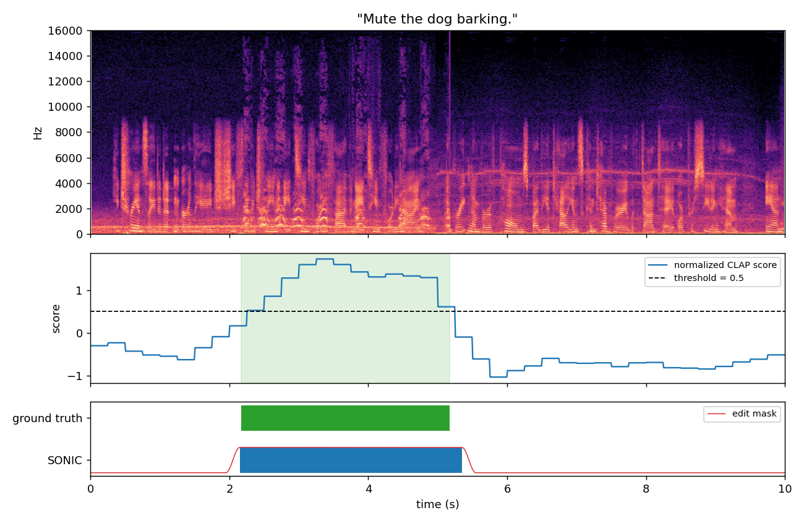
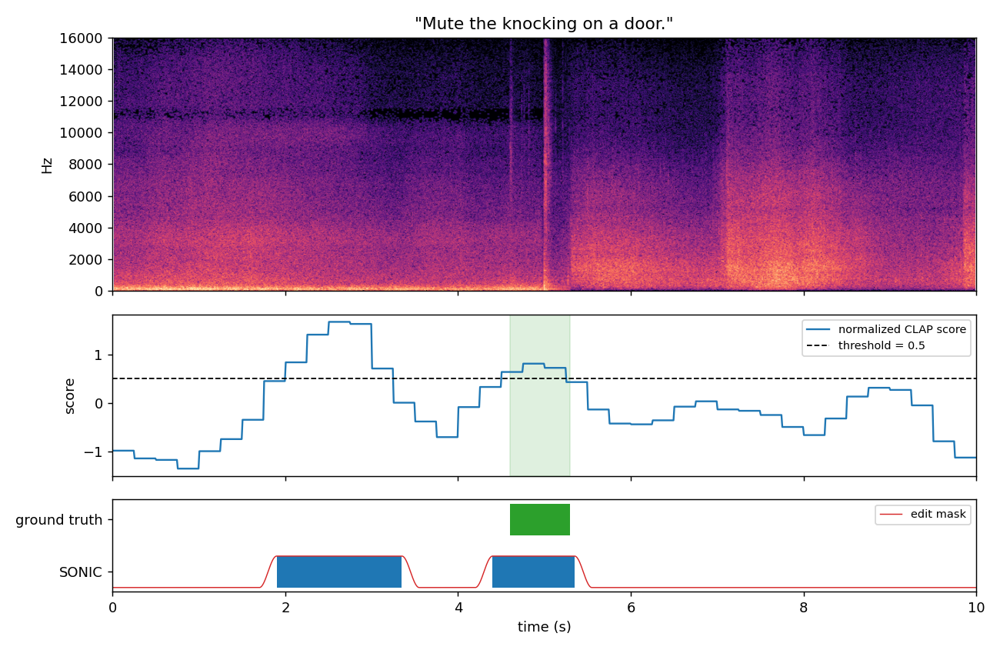
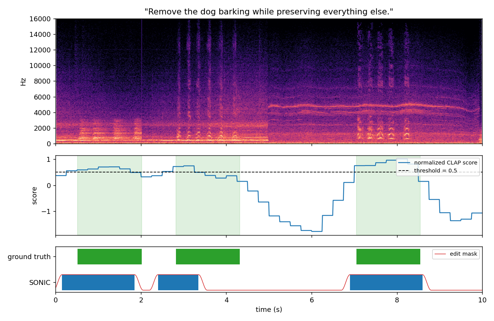

SONIC
Semantic and Temporal Control for instruction-guided audio editing: remove a sound described in natural language, only where it occurs.
How it works
A pretrained text-queried separator (AudioSep) estimates the target sound. SONIC scores 1 s windows with CLAP text–audio similarity to find when the target occurs, and subtracts the estimate only inside the detected intervals, with smooth crossfades. Audio outside those intervals is left bit-identical. All methods below share the same separator output; only the edit mask differs.
Results on 60 held-out mixtures
| Method | Whole-clip SDR | Background SDR outside events | Target suppression |
|---|---|---|---|
| Baseline (global removal) | 15.5 [13.5, 17.5] | 20.8 [17.4, 24.2] | 13.7 [12.4, 15.3] |
| SONIC | 17.6 [15.6, 19.7] | 36.7 [33.3, 40.0] | 11.2 [9.5, 12.9] |
| Oracle mask | 20.9 [19.2, 22.7] | 39.3 [36.5, 42.2] | 13.7 [12.4, 15.3] |
- Localized editing preserves the background far better (+16 dB outside events) and improves whole-clip SDR by 2.1 dB (p = 0.007).
- Missed event segments cost 2.6 dB of target suppression on average, mostly on repeated events.
- With ground-truth intervals (oracle), gains reach +5.4 dB with no suppression loss, so localization is the bottleneck.
Mean [95% bootstrap CI]. Synthetic mixtures from ESC-50 (CC BY-NC 3.0) and LibriSpeech (CC BY 4.0). Examples are the first eval clip of each scenario, not hand-picked.
Example 1: Dog barking over an environmental background with speech
“Mute the dog barking.”

| Method | SDR (dB) | Background SDR outside events (dB) | Target suppression (dB) | Localization IoU |
|---|---|---|---|---|
| Baseline | 14.9 | 19.7 | 9.6 | – |
| SONIC | 16.0 | 31.3 | 9.6 | 0.94 |
| Oracle | 15.9 | 28.8 | 9.6 | 0.94 |
Example 2: A single short event over a continuous background
“Mute the knocking on a door.”

| Method | SDR (dB) | Background SDR outside events (dB) | Target suppression (dB) | Localization IoU |
|---|---|---|---|---|
| Baseline | 22.7 | 41.4 | 7.0 | – |
| SONIC | 22.7 | 44.0 | 7.0 | 0.29 |
| Oracle | 22.8 | 60.0 | 7.0 | 0.78 |
Example 3: A sound occurring at multiple timestamps (SONIC's failure case: it misses part of an event)
“Remove the dog barking while preserving everything else.”

| Method | SDR (dB) | Background SDR outside events (dB) | Target suppression (dB) | Localization IoU |
|---|---|---|---|---|
| Baseline | 18.1 | 44.8 | 12.9 | – |
| SONIC | 11.4 | 52.4 | 6.2 | 0.61 |
| Oracle | 18.1 | 46.6 | 12.9 | 0.88 |